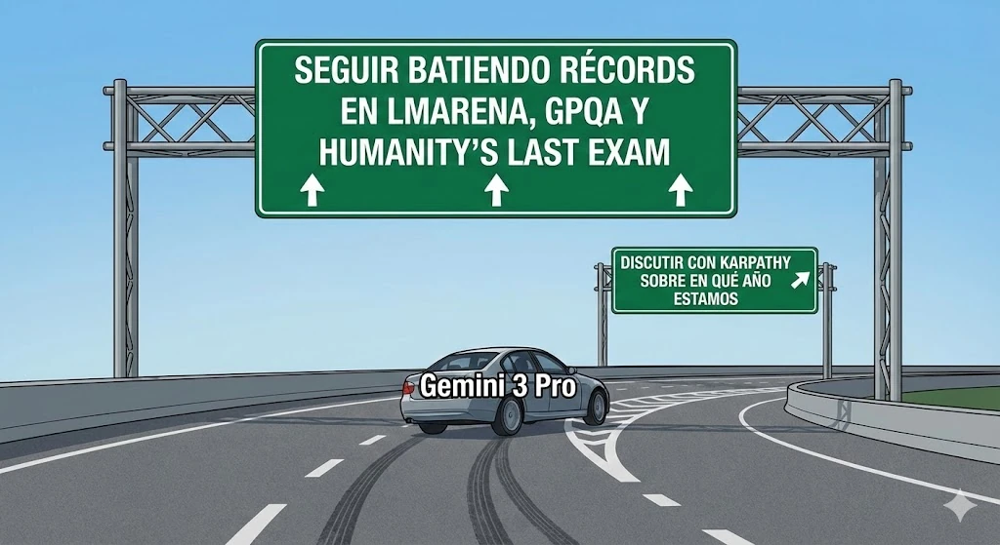

estrategIA #113 ·
El desvío del calendario
El contexto
LMArena, GPQA y Humanity’s Last Exam son comparaciones y pruebas de capacidad de los modelos de IA. Aunque Gemini 3 Pro obtenía grandes resultados, la edición contaba que discutió con el investigador Andrej Karpathy sobre el año en curso. El desvío del coche representa ese tropiezo en una cuestión elemental.
Publicado en: estrategIA #113 — Gemini 3 Pro: el gigante de Google que domina los benchmarks pero tropieza con el calendario
Leer el texto de la imagen
SEGUIR BATIENDO RÉCORDS EN LMARENA, GPQA Y HUMANITY’S LAST EXAM DISCUTIR CON KARPATHY SOBRE EN QUÉ AÑO ESTAMOS Gemini 3 Pro